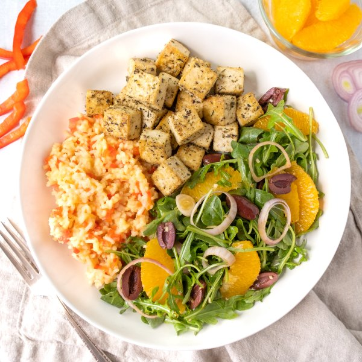

Italian Tofu with Creamy Bell Pepper Rice & Orange-Olive Arugula Salad

Nutrition (per serving)
653.5 kcalCalories
31 gProtein
59.3 gCarbs
34.9 gFat
Full nutrition table
| Calories | 653.5 kcal |
| Total fat | 34.9 g |
| Saturated fat | 6.1 g |
| Trans fat | 0.2 g |
| Cholesterol | 9.6 mg |
| Sodium | 223.3 mg |
| Carbohydrates | 59.3 g |
| Fiber | 5.5 g |
| Sugars | 11.2 g |
| Protein | 31 g |
| Potassium | 837.1 mg |
| Calcium | 415.6 mg |
| Iron | 7.2 mg |
| Vitamin A | 263.1 IU |
| Vitamin C | 118.3 mg |
| Vitamin D | 2.7 IU |
Cookware
Ingredients
- 1 (5 oz) pkgbaby arugula
- 1 cupbasmati rice
- 20 fl ozchicken or vegetable broth
- 2 (12 oz) pkgextra firm tofu
- 2 clovesgarlic
- ¼ cupKalamata olives, pitted
- 2oranges
- 2 ozParmesan cheese
- 2red bell peppers
- 1shallot
- black pepper
- extra virgin olive oil
- garlic powder
- Italian seasoning
- onion powder
- paprika
- salt
- white wine vinegar
Steps
- Preheat oven to 450°F.
- Cut tofu in half along the long side. Sandwich tofu between clean towels or paper towels and place on a baking sheet pan. Place a cutting board with something heavy on top and set aside to press out excess water.2 (12 oz) pkg extra firm tofu
- Meanwhile, wash and dry the fresh produce. (Skip the arugula if it came pre-washed.)2 red bell peppers
2 oranges
1 (5 oz) pkg baby arugula - Using a strainer or colander, rinse the rice under cold, running water, then drain and transfer to a medium saucepan. Add broth and salt to the pan; bring the mixture to a boil over high heat.1 cup basmati rice
20 fl oz (2 ½ cups) chicken or vegetable broth
½ tsp salt - While the broth is heating up, trim, seed, and mince bell peppers.
- Once the broth comes to a boil, add bell pepper and stir to combine; cover the saucepan and reduce heat to low. Cook bell pepper-rice until liquid is mostly absorbed, 18-20 minutes. Once done, remove from the heat and let it stand, still covered, for 5 minutes.
- Meanwhile, place oil and spices in a large bowl; stir to combine the spice paste.3 tbsp extra virgin olive oil
2 tsp Italian seasoning
1 tsp garlic powder
1 tsp onion powder
1 tsp salt
½ tsp black pepper - Medium dice tofu, add to the bowl with the spice paste, and gently stir to coat. Transfer tofu to a large baking sheet and spread out in a single layer. (Reserve bowl for later use.)
- Place baking sheet in the oven (it doesn't have to be fully heated) and bake, tossing halfway through, until tofu is golden brown, about 20 minutes. Remove from oven.
- While the tofu is cooking, peel and mince garlic. Place in the reserved bowl along with oil, vinegar, and spices; whisk to combine the dressing.2 cloves garlic
2 tbsp extra virgin olive oil
4 tsp white wine vinegar
½ tsp paprika
¼ tsp salt
⅛ tsp black pepper - Peel and thinly slice shallot into rings. Add to the bowl with the dressing.1 shallot
- Cut off skin and white pith from the oranges; slice between the membranes to release segments. Add to the bowl.
- Halve olives lengthwise. Add to the bowl along with the arugula and toss to combine the salad. Set aside.¼ cup Kalamata olives, pitted
- Finely grate Parmesan. When the bell pepper-rice is done, add Parmesan to the pan and stir until creamy and combined.2 oz Parmesan cheese
- To serve, divide tofu, creamy bell pepper-rice, and salad between plates. Enjoy!